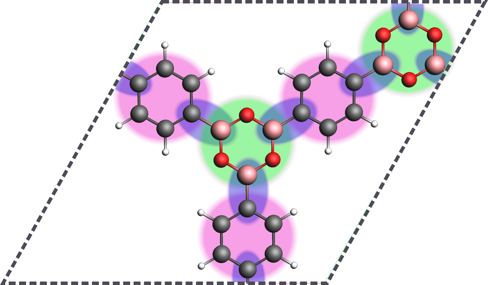
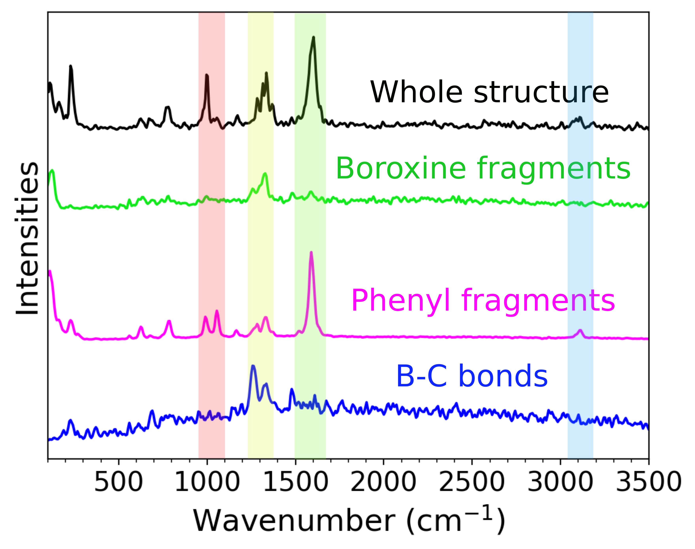
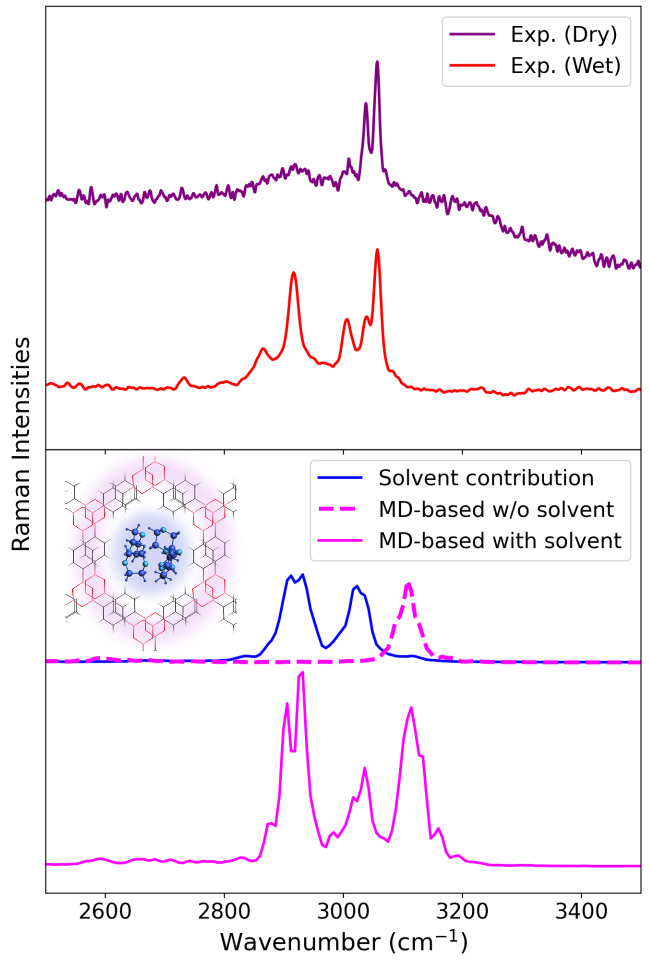

Subspectra for MD-based calculations¶
Vibrant can compute the molecular dynamics (MD)-based IR or Raman subspectra of specified molecular blocks or fragments by processing the Wannier centers. This is especially useful for extracting the solvent contribution in a system consisting of a material + solvent. Additionally, molecular blocks found in framework systems (such as covalent organic frameworks, denoted as COFs) can similarly be specified in a list to extract their subspectra, allowing the analysis of individual contributions on the spectrum. To calculate any subspectra, the user first must provide the list of the indices of all atoms belonging to that fragment. Multiple fragment blocks can be specified by the user, each consisting of several fragments. The following figure demonstrates how the molecular blocks in a framework system may look like:

Assigned fragments in a framework system (COF-1). The boroxine and phenyl fragments of the system are highlighted in green and purple, the connecting B-C bonds are highlighted in blue.
An example input section for computing fragment-based spectra is shown below:
&system
...
&fragment
atom_list {$index_1} {$index_2} {$index_3} ...
atom_list {$index_1} {$index_2} {$index_3} ...
atom_list {$index_1} {$index_2} {$index_3} ...
.....
%end fragment{$index_1}
&fragment
atom_list {$index_1} {$index_2} {$index_3} ...
atom_list {$index_1} {$index_2} {$index_3} ...
atom_list {$index_1} {$index_2} {$index_3} ...
...
%end fragment
...
%end system
For instance, the phenyl and boroxine fragments of COF-1 can be given in different fragment sections. However, all fragments in a fragment block (indicated with the keyword atom_list) must consist of the same number of atoms. The rest of the input file must include all the other necessary sections in a MD-based Raman (see Section Raman Spectra) or MD-based IR calculation (see Section IR Spectra).
Based on a distance cut-off criteria which relies on periodic boundary conditions (PBC), Vibrant scans through all Wannier centers in the provided file and assigns them to the individiual molecular blocks. Afterwards, center of mass of each fragment is calculated, which serves as the reference point. The dipole moment contribution of the specified molecular block is computed based on the distances and charges of the fragment atoms with respect to the center of mass. More information on the equations is provided in the subsection “Dipole moment types” of Section IR Spectra. For all given fragment blocks, Vibrant prints out the requested spectra in separate files, such as in the form:
IR_spectrum_fragment_1.txt
IR_spectrum_fragment_2.txt
…
An example taken from our previous publication on the MD-based vibrational spectroscopy of layered materials, shows how this method can be utilized to dissect a spectrum:

The AIMD-based Raman spectra for pristine COF-1 calculated from MLWFs. The subspectra of the boroxine/phenyl units and B-C bonds are calculated by defining fragments. The prominent peaks are highlighted. This method helps in dissecting and characterizing the overall MD-based spectrum.
Another example is the dissection of the overall spectrum into solvent and material:

Upper plot shows the experimental Raman spectra of COF-1 before and after the material is dried. Lower plot shows the calculated Raman spectra from two MD simulations of COF-1, one containing the solvent molecules (1,4-dioxane) inside the pores and the other one being the pristine material. The extracted spectrum of the solvent molecules is also shown in blue. This method safely ensures that the peaks at around 2850 cm \(^{-1}\) and 3050 cm \(^{-1}\) are indeed resulting from the solvent residues and no other impurity. The molecular representation of the material is also given inside the lower plot, where COF-1 framework is higlighted in pink and the solvent molecules inside the pore are highlighted in blue.
More information on the all available keywords can be found on Section .. and all complete example input files are available on ….